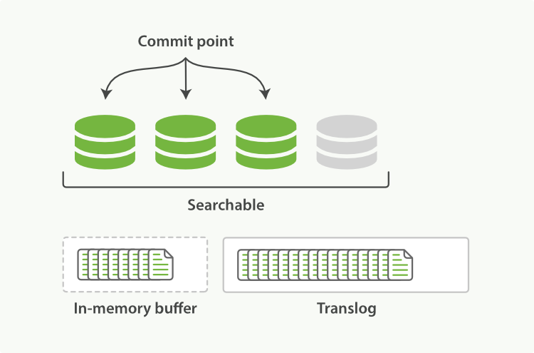

分片内部原理
在 [distributed-cluster], 我们介绍了 分片, 并将它 描述成最小的 工作单元。但是究竟什么 是 一个分片，它是如何工作的？ 在这个章节，我们回答以下问题:
-
为什么搜索是 近 实时的？
-
为什么文档的 CRUD (创建-读取-更新-删除) 操作是 实时 的?
-
Elasticsearch 是怎样保证更新被持久化在断电时也不丢失数据?
-
为什么删除文档不会立刻释放空间？
-
refresh,flush, 和optimizeAPI 都做了什么, 你什么情况下应该是用他们？
最简单的理解一个分片如何工作的方式是上一堂历史课。 我们将要审视提供一个带近实时搜索和分析的 分布式持久化数据存储需要解决的问题。
使文本可被搜索
必须解决的第一个挑战是如何使文本可被搜索。 传统的数据库每个字段存储单个值，但这对全文检索并不够。文本字段中的每个单词需要被搜索，对数据库意味着需要单个字段有索引多值(这里指单词)的能力。
最好的支持 一个字段多个值 需求的数据结构是我们在 [inverted-index] 章节中介绍过的 倒排索引 。 倒排索引包含一个有序列表，列表包含所有文档出现过的不重复个体，或称为 词项 ，对于每一个词项，包含了它所有曾出现过文档的列表。
Term | Doc 1 | Doc 2 | Doc 3 | ... ------------------------------------ brown | X | | X | ... fox | X | X | X | ... quick | X | X | | ... the | X | | X | ...
|
Note
|
当讨论倒排索引时，我们会谈到 文档 标引，因为历史原因，倒排索引被用来对整个非结构化文本文档进行标引。 Elasticsearch 中的 文档 是有字段和值的结构化 JSON 文档。事实上，在 JSON 文档中， 每个被索引的字段都有自己的倒排索引。 |
这个倒排索引相比特定词项出现过的文档列表，会包含更多其它信息。它会保存每一个词项出现过的文档总数， 在对应的文档中一个具体词项出现的总次数，词项在文档中的顺序，每个文档的长度，所有文档的平均长度，等等。这些统计信息允许 Elasticsearch 决定哪些词比其它词更重要，哪些文档比其它文档更重要，这些内容在 [relevance-intro] 中有描述。
为了能够实现预期功能，倒排索引需要知道集合中的 所有 文档，这是需要认识到的关键问题。
早期的全文检索会为整个文档集合建立一个很大的倒排索引并将其写入到磁盘。 一旦新的索引就绪，旧的就会被其替换，这样最近的变化便可以被检索到。
不变性
倒排索引被写入磁盘后是 不可改变 的:它永远不会修改。 不变性有重要的价值：
-
不需要锁。如果你从来不更新索引，你就不需要担心多进程同时修改数据的问题。
-
一旦索引被读入内核的文件系统缓存，便会留在哪里，由于其不变性。只要文件系统缓存中还有足够的空间，那么大部分读请求会直接请求内存，而不会命中磁盘。这提供了很大的性能提升。
-
其它缓存(像filter缓存)，在索引的生命周期内始终有效。它们不需要在每次数据改变时被重建，因为数据不会变化。
-
写入单个大的倒排索引允许数据被压缩，减少磁盘 I/O 和 需要被缓存到内存的索引的使用量。
当然，一个不变的索引也有不好的地方。主要事实是它是不可变的! 你不能修改它。如果你需要让一个新的文档 可被搜索，你需要重建整个索引。这要么对一个索引所能包含的数据量造成了很大的限制，要么对索引可被更新的频率造成了很大的限制。
动态更新索引
下一个需要被解决的问题是怎样在保留不变性的前提下实现倒排索引的更新？答案是: 用更多的索引。
通过增加新的补充索引来反映新近的修改，而不是直接重写整个倒排索引。每一个倒排索引都会被轮流查询到—从最早的开始—查询完后再对结果进行合并。
Elasticsearch 基于 Lucene, 这个 java 库引入了 按段搜索 的概念。 每一 段 本身都是一个倒排索引， 但 索引 在 Lucene 中除表示所有 段 的集合外， 还增加了 提交点 的概念 — 一个列出了所有已知段的文件，就像在 一个 Lucene 索引包含一个提交点和三个段 中描绘的那样。 如 一个在内存缓存中包含新文档的 Lucene 索引 所示，新的文档首先被添加到内存索引缓存中，然后写入到一个基于磁盘的段，如 在一次提交后，一个新的段被添加到提交点而且缓存被清空。 所示。

逐段搜索会以如下流程进行工作：
-
新文档被收集到内存索引缓存， 见 一个在内存缓存中包含新文档的 Lucene 索引 。
-
不时地, 缓存被 提交 ：
-
一个新的段—一个追加的倒排索引—被写入磁盘。
-
一个新的包含新段名字的 提交点 被写入磁盘。
-
磁盘进行 同步 — 所有在文件系统缓存中等待的写入都刷新到磁盘，以确保它们被写入物理文件。
-
-
新的段被开启，让它包含的文档可见以被搜索。
-
内存缓存被清空，等待接收新的文档。

当一个查询被触发，所有已知的段按顺序被查询。词项统计会对所有段的结果进行聚合，以保证每个词和每个文档的关联都被准确计算。 这种方式可以用相对较低的成本将新文档添加到索引。
删除和更新
段是不可改变的，所以既不能从把文档从旧的段中移除，也不能修改旧的段来进行反映文档的更新。
取而代之的是，每个提交点会包含一个 .del 文件，文件中会列出这些被删除文档的段信息。
当一个文档被 “删除” 时，它实际上只是在 .del 文件中被 标记 删除。一个被标记删除的文档仍然可以被查询匹配到，
但它会在最终结果被返回前从结果集中移除。
文档更新也是类似的操作方式：当一个文档被更新时，旧版本文档被标记删除，文档的新版本被索引到一个新的段中。 可能两个版本的文档都会被一个查询匹配到，但被删除的那个旧版本文档在结果集返回前就已经被移除。
在 段合并 , 我们展示了一个被删除的文档是怎样被文件系统移除的。
近实时搜索
随着按段（per-segment）搜索的发展，一个新的文档从索引到可被搜索的延迟显著降低了。新文档在几分钟之内即可被检索，但这样还是不够快。
磁盘在这里成为了瓶颈。提交（Commiting）一个新的段到磁盘需要一个
fsync 来确保段被物理性地写入磁盘，这样在断电的时候就不会丢失数据。
但是 fsync 操作代价很大; 如果每次索引一个文档都去执行一次的话会造成很大的性能问题。
我们需要的是一个更轻量的方式来使一个文档可被搜索，这意味着 fsync 要从整个过程中被移除。
在Elasticsearch和磁盘之间是文件系统缓存。 像之前描述的一样， 在内存索引缓冲区（ 在内存缓冲区中包含了新文档的 Lucene 索引 ）中的文档会被写入到一个新的段中（ 缓冲区的内容已经被写入一个可被搜索的段中，但还没有进行提交 ）。 但是这里新段会被先写入到文件系统缓存—这一步代价会比较低，稍后再被刷新到磁盘—这一步代价比较高。不过只要文件已经在缓存中， 就可以像其它文件一样被打开和读取了。

Lucene 允许新段被写入和打开—使其包含的文档在未进行一次完整提交时便对搜索可见。 这种方式比进行一次提交代价要小得多，并且在不影响性能的前提下可以被频繁地执行。

refresh API
在 Elasticsearch 中，写入和打开一个新段的轻量的过程叫做 refresh 。 默认情况下每个分片会每秒自动刷新一次。这就是为什么我们说 Elasticsearch 是 近 实时搜索: 文档的变化并不是立即对搜索可见，但会在一秒之内变为可见。
这些行为可能会对新用户造成困惑: 他们索引了一个文档然后尝试搜索它，但却没有搜到。这个问题的解决办法是用 refresh API 执行一次手动刷新:
POST /_refresh (1)
POST /blogs/_refresh (2)-
刷新（Refresh）所有的索引。
-
只刷新（Refresh）
blogs索引。
|
Tip
|
尽管刷新是比提交轻量很多的操作，它还是会有性能开销。当写测试的时候， 手动刷新很有用，但是不要在生产环境下每次索引一个文档都去手动刷新。 相反，你的应用需要意识到 Elasticsearch 的近实时的性质，并接受它的不足。 |
并不是所有的情况都需要每秒刷新。可能你正在使用 Elasticsearch 索引大量的日志文件， 你可能想优化索引速度而不是近实时搜索，
可以通过设置 refresh_interval ， 降低每个索引的刷新频率：
PUT /my_logs
{
"settings": {
"refresh_interval": "30s" (1)
}
}-
每30秒刷新
my_logs索引。
refresh_interval 可以在既存索引上进行动态更新。
在生产环境中，当你正在建立一个大的新索引时，可以先关闭自动刷新，待开始使用该索引时，再把它们调回来：
PUT /my_logs/_settings
{ "refresh_interval": -1 } (1)
PUT /my_logs/_settings
{ "refresh_interval": "1s" } (2)-
关闭自动刷新。
-
每秒自动刷新。
|
Caution
|
refresh_interval 需要一个 持续时间 值， 例如 1s （1 秒） 或 2m （2 分钟）。
一个绝对值 1 表示的是 1毫秒 --无疑会使你的集群陷入瘫痪。
|
持久化变更
如果没有用 fsync 把数据从文件系统缓存刷（flush）到硬盘，我们不能保证数据在断电甚至是程序正常退出之后依然存在。为了保证 Elasticsearch 的可靠性，需要确保数据变化被持久化到磁盘。
在 动态更新索引，我们说一次完整的提交会将段刷到磁盘，并写入一个包含所有段列表的提交点。Elasticsearch 在启动或重新打开一个索引的过程中使用这个提交点来判断哪些段隶属于当前分片。
即使通过每秒刷新（refresh）实现了近实时搜索，我们仍然需要经常进行完整提交来确保能从失败中恢复。但在两次提交之间发生变化的文档怎么办？我们也不希望丢失掉这些数据。
Elasticsearch 增加了一个 translog ，或者叫事务日志，在每一次对 Elasticsearch 进行操作时均进行了日志记录。通过 translog ，整个流程看起来是下面这样：
-
一个文档被索引之后，就会被添加到内存缓冲区，并且 追加到了 translog ，正如 新的文档被添加到内存缓冲区并且被追加到了事务日志 描述的一样。
 Figure 6. 新的文档被添加到内存缓冲区并且被追加到了事务日志
Figure 6. 新的文档被添加到内存缓冲区并且被追加到了事务日志 -
刷新（refresh）使分片处于 刷新（refresh）完成后, 缓存被清空但是事务日志不会 描述的状态，分片每秒被刷新（refresh）一次：
-
这些在内存缓冲区的文档被写入到一个新的段中，且没有进行
fsync操作。 -
这个段被打开，使其可被搜索。
-
内存缓冲区被清空。
 Figure 7. 刷新（refresh）完成后, 缓存被清空但是事务日志不会
Figure 7. 刷新（refresh）完成后, 缓存被清空但是事务日志不会 -
-
这个进程继续工作，更多的文档被添加到内存缓冲区和追加到事务日志（见 事务日志不断积累文档 ）。
Figure 8. 事务日志不断积累文档 -
每隔一段时间—例如 translog 变得越来越大—索引被刷新（flush）；一个新的 translog 被创建，并且一个全量提交被执行（见 在刷新（flush）之后，段被全量提交，并且事务日志被清空 ）：
-
所有在内存缓冲区的文档都被写入一个新的段。
-
缓冲区被清空。
-
一个提交点被写入硬盘。
-
文件系统缓存通过
fsync被刷新（flush）。 -
老的 translog 被删除。
-
translog 提供所有还没有被刷到磁盘的操作的一个持久化纪录。当 Elasticsearch 启动的时候， 它会从磁盘中使用最后一个提交点去恢复已知的段，并且会重放 translog 中所有在最后一次提交后发生的变更操作。
translog 也被用来提供实时 CRUD 。当你试着通过ID查询、更新、删除一个文档，它会在尝试从相应的段中检索之前， 首先检查 translog 任何最近的变更。这意味着它总是能够实时地获取到文档的最新版本。

flush API
这个执行一个提交并且截断 translog 的行为在 Elasticsearch 被称作一次 flush 。
分片每30分钟被自动刷新（flush），或者在 translog 太大的时候也会刷新。请查看
translog 文档 来设置，它可以用来
控制这些阈值：
{ref}/indices-flush.html[flush API] 可以被用来执行一个手工的刷新（flush）:
POST /blogs/_flush (1)
POST /_flush?wait_for_ongoing (2)-
刷新（flush）
blogs索引。 -
刷新（flush）所有的索引并且并且等待所有刷新在返回前完成。
你很少需要自己手动执行一个的 flush 操作；通常情况下，自动刷新就足够了。
这就是说，在重启节点或关闭索引之前执行 flush 有益于你的索引。当 Elasticsearch 尝试恢复或重新打开一个索引， 它需要重放 translog 中所有的操作，所以如果日志越短，恢复越快。
段合并
由于自动刷新流程每秒会创建一个新的段 ，这样会导致短时间内的段数量暴增。而段数目太多会带来较大的麻烦。 每一个段都会消耗文件句柄、内存和cpu运行周期。更重要的是，每个搜索请求都必须轮流检查每个段；所以段越多，搜索也就越慢。
Elasticsearch通过在后台进行段合并来解决这个问题。小的段被合并到大的段，然后这些大的段再被合并到更大的段。
段合并的时候会将那些旧的已删除文档从文件系统中清除。被删除的文档（或被更新文档的旧版本）不会被拷贝到新的大段中。
启动段合并不需要你做任何事。进行索引和搜索时会自动进行。这个流程像在 两个提交了的段和一个未提交的段正在被合并到一个更大的段 中提到的一样工作：
1、 当索引的时候，刷新（refresh）操作会创建新的段并将段打开以供搜索使用。
2、 合并进程选择一小部分大小相似的段，并且在后台将它们合并到更大的段中。这并不会中断索引和搜索。
3、 一旦合并结束，老的段被删除 说明合并完成时的活动：
-
新的段被刷新（flush）到了磁盘。 ** 写入一个包含新段且排除旧的和较小的段的新提交点。
-
新的段被打开用来搜索。
-
老的段被删除。

合并大的段需要消耗大量的I/O和CPU资源，如果任其发展会影响搜索性能。Elasticsearch在默认情况下会对合并流程进行资源限制，所以搜索仍然 有足够的资源很好地执行。
|
Tip
|
查看 [segments-and-merging] 来为你的实例获取关于合并调整的建议。 |
optimize API
optimize API大可看做是 强制合并 API。它会将一个分片强制合并到 max_num_segments 参数指定大小的段数目。
这样做的意图是减少段的数量（通常减少到一个），来提升搜索性能。
|
Warning
|
optimize API 不应该 被用在一个动态索引————一个正在被活跃更新的索引。后台合并流程已经可以很好地完成工作。
optimizing 会阻碍这个进程。不要干扰它！
|
在特定情况下，使用 optimize API 颇有益处。例如在日志这种用例下，每天、每周、每月的日志被存储在一个索引中。
老的索引实质上是只读的；它们也并不太可能会发生变化。
在这种情况下，使用optimize优化老的索引，将每一个分片合并为一个单独的段就很有用了；这样既可以节省资源，也可以使搜索更加快速：
POST /logstash-2014-10/_optimize?max_num_segments=1 (1)-
合并索引中的每个分片为一个单独的段
|
Warning
|
请注意，使用 |